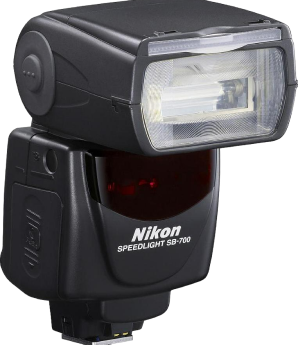
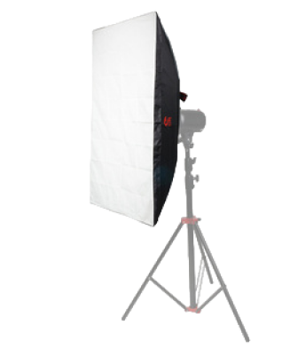
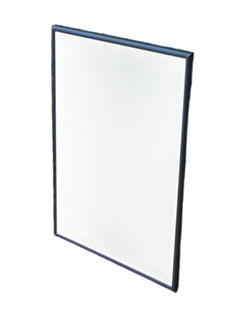

свет....
Хорошее освещение является ключевым элементом
для создания качественных фотографий.
Фотографы могут использовать различные источники света,
такие как вспышки, световые панели
или непосредственное естественное освещение,
чтобы создать нужный эффект и настроение на фотографии.


